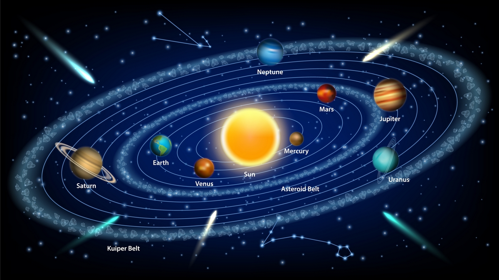

Voyager1
La Voyager 1 llegó al espacio interestelar en agosto de 2012 y es el objeto más distante creado por humanos que existe. Lanzada poco después de su nave espacial gemela, la Voyager 2, en 1977, la Voyager 1 exploró los sistemas joviano y saturnino descubriendo nuevas lunas, volcanes activos y una gran cantidad de datos sobre el sistema solar exterior.
- Ninguna nave espacial ha ido más lejos que la Voyager 1 de la NASA. Lanzada en 1977 para volar por Júpiter y Saturno, la Voyager 1 cruzó al espacio interestelar en agosto de 2012 y continúa recopilando información en la actualidad.
- La Voyager 1 y su nave hermana, la Voyager 2, han estado volando más tiempo que cualquier otra nave espacial en la historia.
- Las misiones Voyager no solo brindan a la humanidad observaciones de territorios verdaderamente inexplorados, sino que también ayudan a los científicos a comprender la naturaleza misma de la energía y la radiación en el espacio, información clave para proteger futuras misiones y astronautas.
- La Voyager 1 lleva una copia del Disco Dorado, un mensaje de la humanidad al cosmos que incluye saludos en 55 idiomas, fotografías de personas y lugares de la Tierra y música que va desde Beethoven hasta "Johnny B. Goode" de Chuck Berry.
Se escucho una de las canciones mas iconicas de la musica clasica y que esta grabada en el disco de oro que transporta el Voyager I, la interpretación esta a cargo Eddar Moser (Soprano) y la Ópera del Estado de Baviera dirigido por Wolfgang Sawallisch, el autor original de dicha obra musical es Mozart, el cual dio a conocer su obra con el nombre de la flauta mágica.
Si quieres saber mas información del Voyager I, como en donde se encuentra en este momento, cuanto periodo lleva en el espacio o ver un modelo 3D del sistema solar, incluyendo la posición actual del Voyager I, da click sobre la imagen del sistema solar. Estos recursos son posibles a los sistemas de información de la NASA
